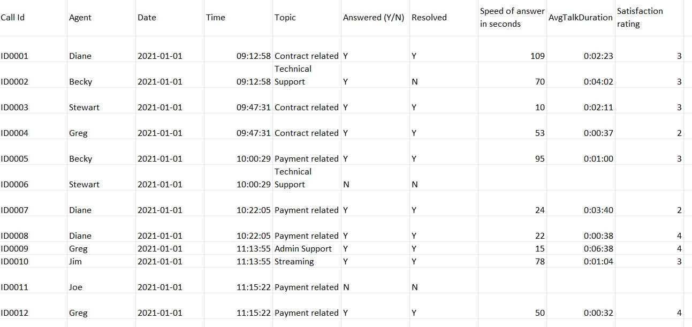
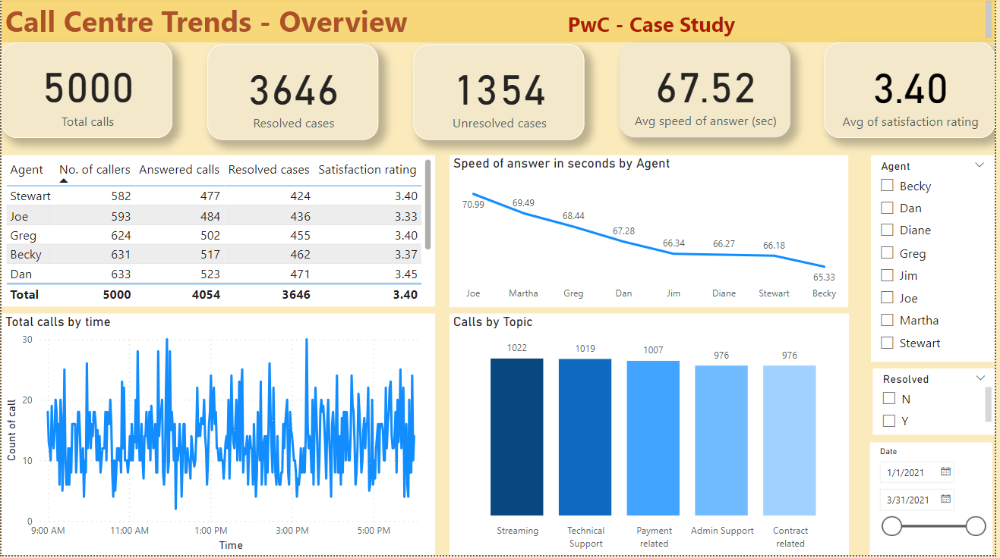

Data Source
The call center dataset was sourced from a Power BI course case study conducted by PwC. It encompasses customer Call IDs, Agent names, incoming call dates, call topics, call reception status, problem resolved status, call answering speed, average talk duration, and Satisfaction ratings.

Data Analysis
In Power BI, a comprehensive analysis of agents' performance was conducted. Key Performance Indicators (KPIs) comprised:
- Total number of calls, resolved cases, and unresolved cases.
- Average speed of answering customer calls in seconds.
- Average customer satisfaction rating.
- Agents' performance was scrutinized in a tabular format, showcasing values such as the number of callers, answered calls, resolved cases, and satisfaction rating per agent.
- Average speed of answering calls by each agent.
- Count of calls categorized by time of day.
- Number of calls per topic.
All KPIs were amalgamated and dynamically visualized in a dashboard. Filters on the right side enable users to scrutinize data based on a specific agent, case resolution status, and date range.
